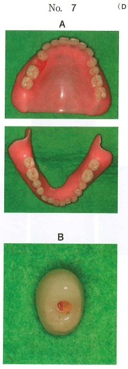

| 項目 | リライン | リベース |
|---|---|---|
| 定義 | 義歯床粘膜面に材料を添加 | 義歯床を全部置換 |
| 適応 | 軽度の顎堤吸収 | 適切な咬合状態、著明な床の変色 |
| 方法 | 直接法・間接法 | 間接法 |
人工歯の脱離や義歯床の破折は修理で対応。
口腔内で直接印象採得し、常温重合レジンで裏装する方法。チェアサイドで完結。
印象採得後、技工室でフラスク埋没して加熱重合レジンで裏装する方法。
注意：アルジネート印象材は間接法リラインには適さない。
下顎全部床義歯のリラインに用いるのはどれか。1つ選べ。
【解説】リラインにはダイナミック印象（粘膜調整材による機能印象）を用いる。
間接法のリラインで正しいのはどれか。1つ選べ。
【解説】間接法リラインはフラスク埋没が望ましい。加熱重合レジンを使用でき、軟質裏装材も適用可能。
全部床義歯のリベースの適用要件はどれか。2つ選べ。
【解説】リベースの適用要件は適切な咬合状態と義歯床の著明な変色。人工歯脱離・義歯床破折は修理、軽度の顎堤吸収はリラインで対応。
65歳の女性。人工歯の脱離を主訴として来院した。義歯は1年前に装着し、人工歯が脱離したのは初めてという。検査の結果、上下顎義歯の維持安定は良好であった。義歯の写真（別冊No.7A）と脱離した人工歯基底面の写真（別冊No.7B）を別に示す。
考えられる原因はどれか。1つ選べ。

【解説】人工歯基底面に接着面がないことからレジン填入圧の不足が原因。人工歯と義歯床の接着が不十分。
全部床義歯の間接法によるリラインに適した印象材はどれか。2つ選べ。
【解説】間接法リラインには印象用ワックスとダイナミック印象材（粘膜調整材）が適する。アルジネート印象材は寸法安定性が低く不適。